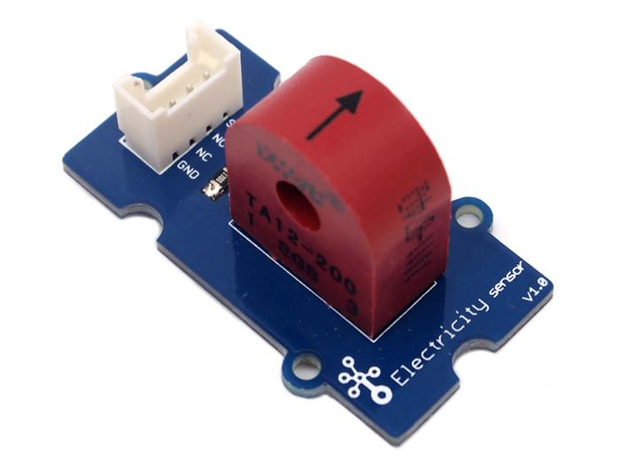
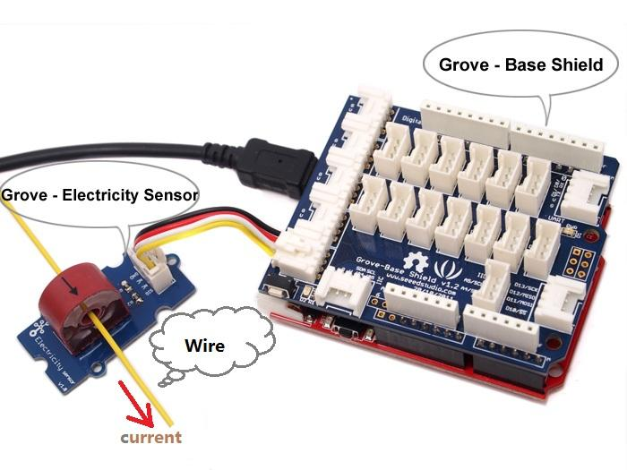
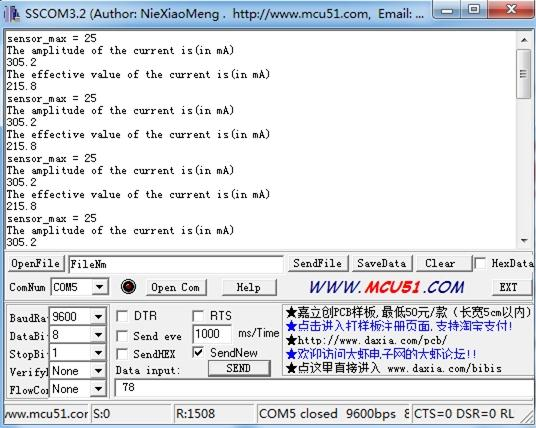

The Electricity sensor module is a member of Grove. It is based on the TA12-200 current transformer which can transform the large AC into small amplitude. You can use it to test large alternating current up to 5A.
Model:SEN23931P

| Items | Min |
| PCB Size | 2.0cm*4.0cm |
| Interface | 2.0mm pitch pin header |
| IO Structure | SIG,NC,NC,GND |
| ROHS | YES |
| Items | Min | Norm | Max | Unit |
| Transformation ratio | - | 2000:1 | - | - |
| Input Current | 0 | - | 5 | A |
| Output Current | 0 | - | 2.5 | mA |
| Sampling Resistance | - | 800 | - | Ω |
| Sampling Voltage | 0 | - | 2 | V |
| Working Frequency | 20 | - | 20K | HZ |
| Nonlinear scale | - | - | 0.2% | - |
| Phase Shift | - | - | 5' | - |
| Operating Temperature | -55 | - | 85 | ℃ |
| Dielectric strength | - | 6 | - | KVAC/1min |
The following sketch demonstrates a simple application of measuring the amplitude of the alternating voltage.The SIG pin will output a alternating voltage based on the alternating current being measured. You can measure the value using ADC.

/****************************************************************************/
// Function: Measure the amplitude current of the alternating current and
// the effective current of the sinusoidal alternating current.
// Hardware: Grove - Electricity Sensor
// Date: Jan 19,2013
// by www.seeedstudio.com
#define ELECTRICITY_SENSOR A0 // Analog input pin that sensor is attached to
float amplitude_current; //amplitude current
float effective_value; //effective current
void setup()
{
Serial.begin(9600);
pins_init();
}
void loop()
{
int sensor_max;
sensor_max = getMaxValue();
Serial.print("sensor_max = ");
Serial.println(sensor_max);
//the VCC on the Grove interface of the sensor is 5v
amplitude_current=(float)sensor_max/1024*5/800*2000000;
effective_value=amplitude_current/1.414;//minimum_current=1/1024*5/800*2000000/1.414=8.6(mA)
//Only for sinusoidal alternating current
Serial.println("The amplitude of the current is(in mA)");
Serial.println(amplitude_current,1);//Only one number after the decimal point
Serial.println("The effective value of the current is(in mA)");
Serial.println(effective_value,1);
}
void pins_init()
{
pinMode(ELECTRICITY_SENSOR, INPUT);
}
/*Function: Sample for 1000ms and get the maximum value from the SIG pin*/
int getMaxValue()
{
int sensorValue; //value read from the sensor
int sensorMax = 0;
uint32_t start_time = millis();
while((millis()-start_time) < 1000)//sample for 1000ms
{
sensorValue = analogRead(ELECTRICITY_SENSOR);
if (sensorValue > sensorMax)
{
/*record the maximum sensor value*/
sensorMax = sensorValue;
}
}
return sensorMax;
}
Note: The minimum effective current that can be sensed by the code can be calculated using the equation below.
minimum_current=1/1024*5/800*2000000/1.414=8.6(mA).

1.You should have got a raspberry pi and a grovepi or grovepi+.
2.You should have completed configuring the development enviroment, otherwise follow here.
3.Connection
4.Navigate to the demos' directory:
cd yourpath/GrovePi/Software/Python/
nano grove_electricity_sensor.py # "Ctrl+x" to exit #
import time
import grovepi
# Connect the Grove Electricity Sensor to analog port A0
# SIG,NC,NC,GND
sensor = 0
grovepi.pinMode(sensor,"INPUT")
# Vcc of the grove interface is normally 5v
grove_vcc = 5
while True:
try:
# Get sensor value
sensor_value = grovepi.analogRead(sensor)
# Calculate amplitude current (mA)
amplitude_current = (float)(sensor_value / 1024 * grove_vcc / 800 * 2000000)
# Calculate effective value (mA)
effective_value = amplitude_current / 1.414
# minimum_current = 1 / 1024 * grove_vcc / 800 * 2000000 / 1.414 = 8.6(mA)
# Only for sinusoidal alternating current
print "sensor_value", sensor_value
print "The amplitude of the current is", amplitude_current, "mA"
print "The effective value of the current is", effective_value, "mA"
time.sleep(1)
except IOError:
print "Error"
5.Run the demo.
sudo python grove_electricity_sensor.py
If you have questions or other better design ideas, you can go to our forum or wish to discuss.
Copyright (c) 2008-2016 Seeed Development Limited (www.seeedstudio.com / www.seeed.cc)